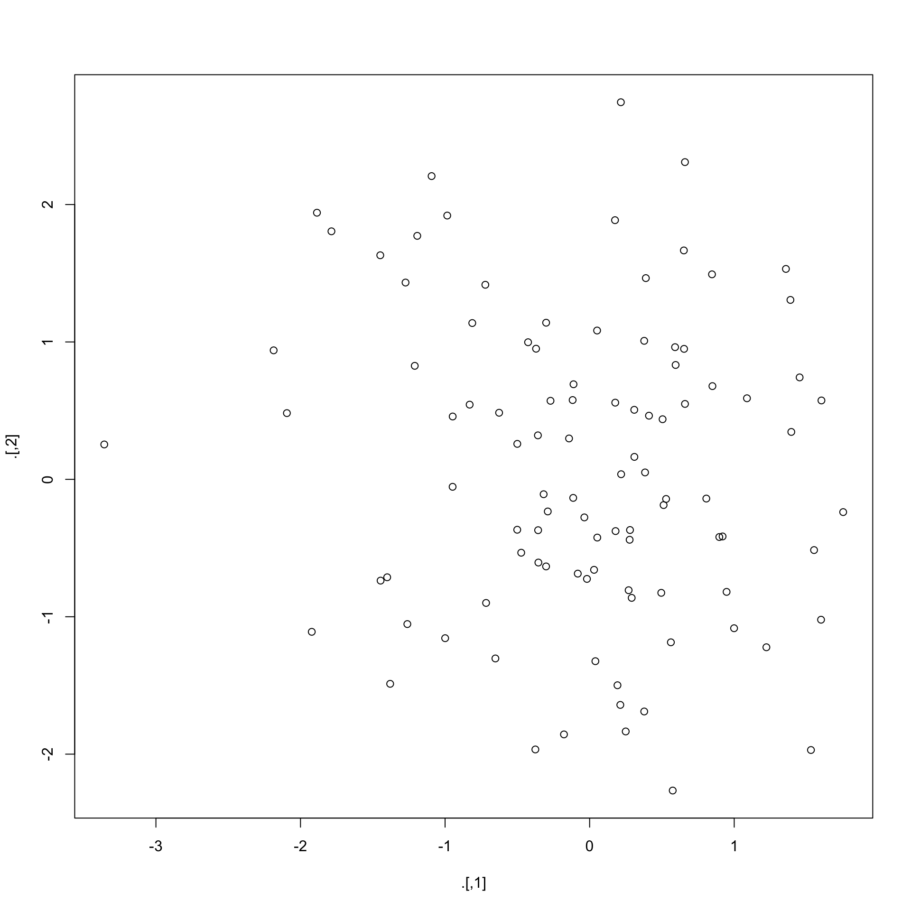

Rの演算子特集
@y__mattu
2017/12/2 Japan.R 2017 LT
はじめに
誰？
- 松村優哉
- Twitter: y__mattu
- GitHub: ymattu
- M1
- 計量経済学、ベイズ統計、因果推論、マーケティング
- 言語: R, SAS, Python
- https://ymattu.github.io/
- http://y-mattu.hatenablog.com/
- Tokyo.R / Japan.R 運営

アルバイトとか
- コミュニケーションアプリの分析
- Web 広告のログ解析
- 電子コミックと医療システムに関する解析と開発
←イマココ - たまに受託
特許
大学での研究プロジェクトで取得予定(権利は共同研究先)
著書(共著)

作ったパッケージ
MlBayesOpt
- 機械学習のパラメーターをベイズ最適化でチューニングする R パッケージ
- メンテ頑張ります…
rjumanpp
- 形態素解析機 JUMAN++の R ラッパー
- 最低限の機能しかないのでメンテ頑張ります…
今日のお話
- Rの演算子を出来る限りいっぱい紹介する
- 細かいことはあとでスライドをみてください。
- スライドのソースは GitHubで公開しています。
代入演算子
<-
どんなのか
おなじみのやつ
vec <- 1:10
vec [1] 1 2 3 4 5 6 7 8 9 10逆(->)でもいい
= との違いは？
- 基本的には(S3クラスをいじってる限りは)ない
- 細かい話はいずれどこかで…
<<-
どんなのか
- 永続代入演算子
- 関数の中でグローバル変数に代入したいとき
x <- 10 # グローバル変数 x
ex_func <- function () {
x <- 600 # 関数 ex_func() 中のローカル変数 x
x <<- 100 # グローバル変数 x に 99 を代入する
print(x) # ローカル変数 x の値を表示
}結果
ex_func()[1] 600x[1] 100算術演算子
+
どんなのか
足します。
a <- 9
b <- 2
a + b[1] 11行列
x <- matrix(1:6, nrow = 2, ncol = 3)
y <- matrix(7:12, nrow = 2, ncol = 3)
x [,1] [,2] [,3]
[1,] 1 3 5
[2,] 2 4 6y [,1] [,2] [,3]
[1,] 7 9 11
[2,] 8 10 12結果
x + y [,1] [,2] [,3]
[1,] 8 12 16
[2,] 10 14 18注意
よくあるプログラミング言語みたいに、文字列はくっつけられません
"Japan" + "R"Error in "Japan" + "R": 二項演算子の引数が数値ではありません -
どんなのか
引きます
a - b[1] 7行列
x - y [,1] [,2] [,3]
[1,] -6 -6 -6
[2,] -6 -6 -6*
どんなのか
かけます
a * b[1] 18行列
要素ごとの掛け算(行列の積ではない)
x * y [,1] [,2] [,3]
[1,] 7 27 55
[2,] 16 40 72%*%
どんなのか
行列の積を計算します。
# 行列の積なので転置する必要あり
x %*% t(y) [,1] [,2]
[1,] 89 98
[2,] 116 128/
どんなのか
割ります
a / b[1] 4.5行列
x / y [,1] [,2] [,3]
[1,] 0.1428571 0.3333333 0.4545455
[2,] 0.2500000 0.4000000 0.5000000%/%
どんなのか
整数の範囲での除算
a %/% b[1] 4# 以下と同じ
floor(a / b)[1] 4%%
どんなのか
余りを出す
9 %% 2[1] 1^
どんなのか
階乗を計算します
a ^ b[1] 81行列
それぞれの要素がn乗されます。
x ^ 2 [,1] [,2] [,3]
[1,] 1 9 25
[2,] 4 16 36比較演算子
==, !=
どんなのか
同じかどうかを判定(TRUE, FALSE で判定)
a == b[1] FALSEaa <- 9
a == a[1] TRUE使い所
library(dplyr)
iris %>%
filter(Sepal.Length == 5.0) Sepal.Length Sepal.Width Petal.Length Petal.Width Species
1 5 3.6 1.4 0.2 setosa
2 5 3.4 1.5 0.2 setosa
3 5 3.0 1.6 0.2 setosa
4 5 3.4 1.6 0.4 setosa
5 5 3.2 1.2 0.2 setosa
6 5 3.5 1.3 0.3 setosa
7 5 3.5 1.6 0.6 setosa
8 5 3.3 1.4 0.2 setosa
9 5 2.0 3.5 1.0 versicolor
10 5 2.3 3.3 1.0 versicolor>, <, =>, <=
どんなのか
大小を判定
a < b[1] FALSE使い所
iris %>%
filter(Sepal.Length >= 6.0) Sepal.Length Sepal.Width Petal.Length Petal.Width Species
1 7.0 3.2 4.7 1.4 versicolor
2 6.4 3.2 4.5 1.5 versicolor
3 6.9 3.1 4.9 1.5 versicolor
4 6.5 2.8 4.6 1.5 versicolor
5 6.3 3.3 4.7 1.6 versicolor
6 6.6 2.9 4.6 1.3 versicolor
7 6.0 2.2 4.0 1.0 versicolor
8 6.1 2.9 4.7 1.4 versicolor
9 6.7 3.1 4.4 1.4 versicolor
10 6.2 2.2 4.5 1.5 versicolor
11 6.1 2.8 4.0 1.3 versicolor
12 6.3 2.5 4.9 1.5 versicolor
13 6.1 2.8 4.7 1.2 versicolor
14 6.4 2.9 4.3 1.3 versicolor
15 6.6 3.0 4.4 1.4 versicolor
16 6.8 2.8 4.8 1.4 versicolor
17 6.7 3.0 5.0 1.7 versicolor
18 6.0 2.9 4.5 1.5 versicolor
19 6.0 2.7 5.1 1.6 versicolor
20 6.0 3.4 4.5 1.6 versicolor
21 6.7 3.1 4.7 1.5 versicolor
22 6.3 2.3 4.4 1.3 versicolor
23 6.1 3.0 4.6 1.4 versicolor
24 6.2 2.9 4.3 1.3 versicolor
25 6.3 3.3 6.0 2.5 virginica
26 7.1 3.0 5.9 2.1 virginica
27 6.3 2.9 5.6 1.8 virginica
28 6.5 3.0 5.8 2.2 virginica
29 7.6 3.0 6.6 2.1 virginica
30 7.3 2.9 6.3 1.8 virginica
31 6.7 2.5 5.8 1.8 virginica
32 7.2 3.6 6.1 2.5 virginica
33 6.5 3.2 5.1 2.0 virginica
34 6.4 2.7 5.3 1.9 virginica
35 6.8 3.0 5.5 2.1 virginica
36 6.4 3.2 5.3 2.3 virginica
37 6.5 3.0 5.5 1.8 virginica
38 7.7 3.8 6.7 2.2 virginica
39 7.7 2.6 6.9 2.3 virginica
40 6.0 2.2 5.0 1.5 virginica
41 6.9 3.2 5.7 2.3 virginica
42 7.7 2.8 6.7 2.0 virginica
43 6.3 2.7 4.9 1.8 virginica
44 6.7 3.3 5.7 2.1 virginica
45 7.2 3.2 6.0 1.8 virginica
46 6.2 2.8 4.8 1.8 virginica
47 6.1 3.0 4.9 1.8 virginica
48 6.4 2.8 5.6 2.1 virginica
49 7.2 3.0 5.8 1.6 virginica
50 7.4 2.8 6.1 1.9 virginica
51 7.9 3.8 6.4 2.0 virginica
52 6.4 2.8 5.6 2.2 virginica
53 6.3 2.8 5.1 1.5 virginica
54 6.1 2.6 5.6 1.4 virginica
55 7.7 3.0 6.1 2.3 virginica
56 6.3 3.4 5.6 2.4 virginica
57 6.4 3.1 5.5 1.8 virginica
58 6.0 3.0 4.8 1.8 virginica
59 6.9 3.1 5.4 2.1 virginica
60 6.7 3.1 5.6 2.4 virginica
61 6.9 3.1 5.1 2.3 virginica
62 6.8 3.2 5.9 2.3 virginica
63 6.7 3.3 5.7 2.5 virginica
64 6.7 3.0 5.2 2.3 virginica
65 6.3 2.5 5.0 1.9 virginica
66 6.5 3.0 5.2 2.0 virginica
67 6.2 3.4 5.4 2.3 virginica論理演算子
&, &&, |, ||
どんなのか
- 条件(ベクトルの要素)を判定
iris %>%
filter(Sepal.Length >= 6 | Sepal.Width <= 3) Sepal.Length Sepal.Width Petal.Length Petal.Width Species
1 4.9 3.0 1.4 0.2 setosa
2 4.4 2.9 1.4 0.2 setosa
3 4.8 3.0 1.4 0.1 setosa
4 4.3 3.0 1.1 0.1 setosa
5 5.0 3.0 1.6 0.2 setosa
6 4.4 3.0 1.3 0.2 setosa
7 4.5 2.3 1.3 0.3 setosa
8 4.8 3.0 1.4 0.3 setosa
9 7.0 3.2 4.7 1.4 versicolor
10 6.4 3.2 4.5 1.5 versicolor
11 6.9 3.1 4.9 1.5 versicolor
12 5.5 2.3 4.0 1.3 versicolor
13 6.5 2.8 4.6 1.5 versicolor
14 5.7 2.8 4.5 1.3 versicolor
15 6.3 3.3 4.7 1.6 versicolor
16 4.9 2.4 3.3 1.0 versicolor
17 6.6 2.9 4.6 1.3 versicolor
18 5.2 2.7 3.9 1.4 versicolor
19 5.0 2.0 3.5 1.0 versicolor
20 5.9 3.0 4.2 1.5 versicolor
21 6.0 2.2 4.0 1.0 versicolor
22 6.1 2.9 4.7 1.4 versicolor
23 5.6 2.9 3.6 1.3 versicolor
24 6.7 3.1 4.4 1.4 versicolor
25 5.6 3.0 4.5 1.5 versicolor
26 5.8 2.7 4.1 1.0 versicolor
27 6.2 2.2 4.5 1.5 versicolor
28 5.6 2.5 3.9 1.1 versicolor
29 6.1 2.8 4.0 1.3 versicolor
30 6.3 2.5 4.9 1.5 versicolor
31 6.1 2.8 4.7 1.2 versicolor
32 6.4 2.9 4.3 1.3 versicolor
33 6.6 3.0 4.4 1.4 versicolor
34 6.8 2.8 4.8 1.4 versicolor
35 6.7 3.0 5.0 1.7 versicolor
36 6.0 2.9 4.5 1.5 versicolor
37 5.7 2.6 3.5 1.0 versicolor
38 5.5 2.4 3.8 1.1 versicolor
39 5.5 2.4 3.7 1.0 versicolor
40 5.8 2.7 3.9 1.2 versicolor
41 6.0 2.7 5.1 1.6 versicolor
42 5.4 3.0 4.5 1.5 versicolor
43 6.0 3.4 4.5 1.6 versicolor
44 6.7 3.1 4.7 1.5 versicolor
45 6.3 2.3 4.4 1.3 versicolor
46 5.6 3.0 4.1 1.3 versicolor
47 5.5 2.5 4.0 1.3 versicolor
48 5.5 2.6 4.4 1.2 versicolor
49 6.1 3.0 4.6 1.4 versicolor
50 5.8 2.6 4.0 1.2 versicolor
51 5.0 2.3 3.3 1.0 versicolor
52 5.6 2.7 4.2 1.3 versicolor
53 5.7 3.0 4.2 1.2 versicolor
54 5.7 2.9 4.2 1.3 versicolor
55 6.2 2.9 4.3 1.3 versicolor
56 5.1 2.5 3.0 1.1 versicolor
57 5.7 2.8 4.1 1.3 versicolor
58 6.3 3.3 6.0 2.5 virginica
59 5.8 2.7 5.1 1.9 virginica
60 7.1 3.0 5.9 2.1 virginica
61 6.3 2.9 5.6 1.8 virginica
62 6.5 3.0 5.8 2.2 virginica
63 7.6 3.0 6.6 2.1 virginica
64 4.9 2.5 4.5 1.7 virginica
65 7.3 2.9 6.3 1.8 virginica
66 6.7 2.5 5.8 1.8 virginica
67 7.2 3.6 6.1 2.5 virginica
68 6.5 3.2 5.1 2.0 virginica
69 6.4 2.7 5.3 1.9 virginica
70 6.8 3.0 5.5 2.1 virginica
71 5.7 2.5 5.0 2.0 virginica
72 5.8 2.8 5.1 2.4 virginica
73 6.4 3.2 5.3 2.3 virginica
74 6.5 3.0 5.5 1.8 virginica
75 7.7 3.8 6.7 2.2 virginica
76 7.7 2.6 6.9 2.3 virginica
77 6.0 2.2 5.0 1.5 virginica
78 6.9 3.2 5.7 2.3 virginica
79 5.6 2.8 4.9 2.0 virginica
80 7.7 2.8 6.7 2.0 virginica
81 6.3 2.7 4.9 1.8 virginica
82 6.7 3.3 5.7 2.1 virginica
83 7.2 3.2 6.0 1.8 virginica
84 6.2 2.8 4.8 1.8 virginica
85 6.1 3.0 4.9 1.8 virginica
86 6.4 2.8 5.6 2.1 virginica
87 7.2 3.0 5.8 1.6 virginica
88 7.4 2.8 6.1 1.9 virginica
89 7.9 3.8 6.4 2.0 virginica
90 6.4 2.8 5.6 2.2 virginica
91 6.3 2.8 5.1 1.5 virginica
92 6.1 2.6 5.6 1.4 virginica
93 7.7 3.0 6.1 2.3 virginica
94 6.3 3.4 5.6 2.4 virginica
95 6.4 3.1 5.5 1.8 virginica
96 6.0 3.0 4.8 1.8 virginica
97 6.9 3.1 5.4 2.1 virginica
98 6.7 3.1 5.6 2.4 virginica
99 6.9 3.1 5.1 2.3 virginica
100 5.8 2.7 5.1 1.9 virginica
101 6.8 3.2 5.9 2.3 virginica
102 6.7 3.3 5.7 2.5 virginica
103 6.7 3.0 5.2 2.3 virginica
104 6.3 2.5 5.0 1.9 virginica
105 6.5 3.0 5.2 2.0 virginica
106 6.2 3.4 5.4 2.3 virginica
107 5.9 3.0 5.1 1.8 virginica&, && の違い
コロン演算子
:
どんなのか
公差1の整数ベクトル
c(1:10) [1] 1 2 3 4 5 6 7 8 9 10::, :::
どんなのか
- パッケージの関数を取り出す
- :: はエクスポートされたもの、::: はエクスポートされてないもの
- library()で読み込めば :: は基本的には不要
こんなこともできます
ggmap::ggimage(ggmap::hadley)magrittrパッケージ編
%>%
パイプ演算子
- パイプの前までの内容をパイプの後の関数の第一引数にいれる
- dplyr などを読み込めば使える
iris %>%
group_by(Species) %>%
summarise(feq = n())# A tibble: 3 x 2
Species feq
<fctr> <int>
1 setosa 50
2 versicolor 50
3 virginica 50%<>%
上書き演算子
library(magrittr)
iris$Sepal.Length %<>% sqrt # 平方根をとって上書き
mean(iris$Sepal.Length)[1] 2.411318%T%
tee 演算子
rnorm(200) %>%
matrix(ncol = 2) %T>%
plot %>% # plot は通常は何も返さないけど...
colSums
[1] -4.503165 8.595828%$%
dollar 演算子
- パイプの中で $ を使いたいとき
- データフレームよりリストが出てくるときに便利
例
iris %>%
select(Sepal.Length, Petal.Length) %>%
prcomp() %$%
x %>%
as_data_frame() %>%
mutate(datID = row_number()) %>%
left_join(mutate(iris, datID = 1:nrow(iris)), .) %>%
select(-datID) %>%
group_by(Species) %>%
summarise_all(mean)# A tibble: 3 x 7
Species Sepal.Length Sepal.Width Petal.Length Petal.Width PC1
<fctr> <dbl> <dbl> <dbl> <dbl> <dbl>
1 setosa 2.236050 3.428 1.462 0.246 -2.3025985
2 versicolor 2.434131 2.770 4.260 1.326 0.5021325
3 virginica 2.563771 2.974 5.552 2.026 1.8004661
# ... with 1 more variables: PC2 <dbl>pipeR パッケージ編
%>>%
Kun Ren 作のやつ
- ごめんなさい歩tンド使わないのでわからないです…
- 一応使い方が邦訳されてます。
- magrittr のパイプで特に困ってないです
purrrパッケージ編
%||%
どんなのか
xがNULLだったらyの値を返す中置演算子
library(purrr)
1 %||% 2[1] 1NULL %||% 2[1] 2%@%
どんなのか
attributeを取り出す中置演算子
matrix(1:6, nrow = 2) %@% "dim"[1] 2 3rlang パッケージ編
Tidyeval で使う
- Tidyeval については yuttannihilationさんの記事を見てください。
- 自分も以前作ったやつをそのうち公開するかも…
!!
クオートを外す
library(rlang)
a <- 1
b <- 2
quo(sum(a, b))<quosure: global>
~sum(a, b)quo(sum(!! a, b))<quosure: global>
~sum(1, b)!!!
!! の複数版
quo(list(!! 1:10))<quosure: global>
~list(1:10)quo(list(!!! 1:10))<quosure: global>
~list(1L, 2L, 3L, 4L, 5L, 6L, 7L, 8L, 9L, 10L)dplyr では
svars <- list(quo(Species), quo(Sepal.Length))
iris %>%
select(!!! svars) Species Sepal.Length
1 setosa 2.258318
2 setosa 2.213594
3 setosa 2.167948
4 setosa 2.144761
5 setosa 2.236068
6 setosa 2.323790
7 setosa 2.144761
8 setosa 2.236068
9 setosa 2.097618
10 setosa 2.213594
11 setosa 2.323790
12 setosa 2.190890
13 setosa 2.190890
14 setosa 2.073644
15 setosa 2.408319
16 setosa 2.387467
17 setosa 2.323790
18 setosa 2.258318
19 setosa 2.387467
20 setosa 2.258318
21 setosa 2.323790
22 setosa 2.258318
23 setosa 2.144761
24 setosa 2.258318
25 setosa 2.190890
26 setosa 2.236068
27 setosa 2.236068
28 setosa 2.280351
29 setosa 2.280351
30 setosa 2.167948
31 setosa 2.190890
32 setosa 2.323790
33 setosa 2.280351
34 setosa 2.345208
35 setosa 2.213594
36 setosa 2.236068
37 setosa 2.345208
38 setosa 2.213594
39 setosa 2.097618
40 setosa 2.258318
41 setosa 2.236068
42 setosa 2.121320
43 setosa 2.097618
44 setosa 2.236068
45 setosa 2.258318
46 setosa 2.190890
47 setosa 2.258318
48 setosa 2.144761
49 setosa 2.302173
50 setosa 2.236068
51 versicolor 2.645751
52 versicolor 2.529822
53 versicolor 2.626785
54 versicolor 2.345208
55 versicolor 2.549510
56 versicolor 2.387467
57 versicolor 2.509980
58 versicolor 2.213594
59 versicolor 2.569047
60 versicolor 2.280351
61 versicolor 2.236068
62 versicolor 2.428992
63 versicolor 2.449490
64 versicolor 2.469818
65 versicolor 2.366432
66 versicolor 2.588436
67 versicolor 2.366432
68 versicolor 2.408319
69 versicolor 2.489980
70 versicolor 2.366432
71 versicolor 2.428992
72 versicolor 2.469818
73 versicolor 2.509980
74 versicolor 2.469818
75 versicolor 2.529822
76 versicolor 2.569047
77 versicolor 2.607681
78 versicolor 2.588436
79 versicolor 2.449490
80 versicolor 2.387467
81 versicolor 2.345208
82 versicolor 2.345208
83 versicolor 2.408319
84 versicolor 2.449490
85 versicolor 2.323790
86 versicolor 2.449490
87 versicolor 2.588436
88 versicolor 2.509980
89 versicolor 2.366432
90 versicolor 2.345208
91 versicolor 2.345208
92 versicolor 2.469818
93 versicolor 2.408319
94 versicolor 2.236068
95 versicolor 2.366432
96 versicolor 2.387467
97 versicolor 2.387467
98 versicolor 2.489980
99 versicolor 2.258318
100 versicolor 2.387467
101 virginica 2.509980
102 virginica 2.408319
103 virginica 2.664583
104 virginica 2.509980
105 virginica 2.549510
106 virginica 2.756810
107 virginica 2.213594
108 virginica 2.701851
109 virginica 2.588436
110 virginica 2.683282
111 virginica 2.549510
112 virginica 2.529822
113 virginica 2.607681
114 virginica 2.387467
115 virginica 2.408319
116 virginica 2.529822
117 virginica 2.549510
118 virginica 2.774887
119 virginica 2.774887
120 virginica 2.449490
121 virginica 2.626785
122 virginica 2.366432
123 virginica 2.774887
124 virginica 2.509980
125 virginica 2.588436
126 virginica 2.683282
127 virginica 2.489980
128 virginica 2.469818
129 virginica 2.529822
130 virginica 2.683282
131 virginica 2.720294
132 virginica 2.810694
133 virginica 2.529822
134 virginica 2.509980
135 virginica 2.469818
136 virginica 2.774887
137 virginica 2.509980
138 virginica 2.529822
139 virginica 2.449490
140 virginica 2.626785
141 virginica 2.588436
142 virginica 2.626785
143 virginica 2.408319
144 virginica 2.607681
145 virginica 2.588436
146 virginica 2.588436
147 virginica 2.509980
148 virginica 2.549510
149 virginica 2.489980
150 virginica 2.428992:=
rename とかで使えるやつ
newname <- "aaaa"
iris %>%
rename(!! newname := Species) Sepal.Length Sepal.Width Petal.Length Petal.Width aaaa
1 2.258318 3.5 1.4 0.2 setosa
2 2.213594 3.0 1.4 0.2 setosa
3 2.167948 3.2 1.3 0.2 setosa
4 2.144761 3.1 1.5 0.2 setosa
5 2.236068 3.6 1.4 0.2 setosa
6 2.323790 3.9 1.7 0.4 setosa
7 2.144761 3.4 1.4 0.3 setosa
8 2.236068 3.4 1.5 0.2 setosa
9 2.097618 2.9 1.4 0.2 setosa
10 2.213594 3.1 1.5 0.1 setosa
11 2.323790 3.7 1.5 0.2 setosa
12 2.190890 3.4 1.6 0.2 setosa
13 2.190890 3.0 1.4 0.1 setosa
14 2.073644 3.0 1.1 0.1 setosa
15 2.408319 4.0 1.2 0.2 setosa
16 2.387467 4.4 1.5 0.4 setosa
17 2.323790 3.9 1.3 0.4 setosa
18 2.258318 3.5 1.4 0.3 setosa
19 2.387467 3.8 1.7 0.3 setosa
20 2.258318 3.8 1.5 0.3 setosa
21 2.323790 3.4 1.7 0.2 setosa
22 2.258318 3.7 1.5 0.4 setosa
23 2.144761 3.6 1.0 0.2 setosa
24 2.258318 3.3 1.7 0.5 setosa
25 2.190890 3.4 1.9 0.2 setosa
26 2.236068 3.0 1.6 0.2 setosa
27 2.236068 3.4 1.6 0.4 setosa
28 2.280351 3.5 1.5 0.2 setosa
29 2.280351 3.4 1.4 0.2 setosa
30 2.167948 3.2 1.6 0.2 setosa
31 2.190890 3.1 1.6 0.2 setosa
32 2.323790 3.4 1.5 0.4 setosa
33 2.280351 4.1 1.5 0.1 setosa
34 2.345208 4.2 1.4 0.2 setosa
35 2.213594 3.1 1.5 0.2 setosa
36 2.236068 3.2 1.2 0.2 setosa
37 2.345208 3.5 1.3 0.2 setosa
38 2.213594 3.6 1.4 0.1 setosa
39 2.097618 3.0 1.3 0.2 setosa
40 2.258318 3.4 1.5 0.2 setosa
41 2.236068 3.5 1.3 0.3 setosa
42 2.121320 2.3 1.3 0.3 setosa
43 2.097618 3.2 1.3 0.2 setosa
44 2.236068 3.5 1.6 0.6 setosa
45 2.258318 3.8 1.9 0.4 setosa
46 2.190890 3.0 1.4 0.3 setosa
47 2.258318 3.8 1.6 0.2 setosa
48 2.144761 3.2 1.4 0.2 setosa
49 2.302173 3.7 1.5 0.2 setosa
50 2.236068 3.3 1.4 0.2 setosa
51 2.645751 3.2 4.7 1.4 versicolor
52 2.529822 3.2 4.5 1.5 versicolor
53 2.626785 3.1 4.9 1.5 versicolor
54 2.345208 2.3 4.0 1.3 versicolor
55 2.549510 2.8 4.6 1.5 versicolor
56 2.387467 2.8 4.5 1.3 versicolor
57 2.509980 3.3 4.7 1.6 versicolor
58 2.213594 2.4 3.3 1.0 versicolor
59 2.569047 2.9 4.6 1.3 versicolor
60 2.280351 2.7 3.9 1.4 versicolor
61 2.236068 2.0 3.5 1.0 versicolor
62 2.428992 3.0 4.2 1.5 versicolor
63 2.449490 2.2 4.0 1.0 versicolor
64 2.469818 2.9 4.7 1.4 versicolor
65 2.366432 2.9 3.6 1.3 versicolor
66 2.588436 3.1 4.4 1.4 versicolor
67 2.366432 3.0 4.5 1.5 versicolor
68 2.408319 2.7 4.1 1.0 versicolor
69 2.489980 2.2 4.5 1.5 versicolor
70 2.366432 2.5 3.9 1.1 versicolor
71 2.428992 3.2 4.8 1.8 versicolor
72 2.469818 2.8 4.0 1.3 versicolor
73 2.509980 2.5 4.9 1.5 versicolor
74 2.469818 2.8 4.7 1.2 versicolor
75 2.529822 2.9 4.3 1.3 versicolor
76 2.569047 3.0 4.4 1.4 versicolor
77 2.607681 2.8 4.8 1.4 versicolor
78 2.588436 3.0 5.0 1.7 versicolor
79 2.449490 2.9 4.5 1.5 versicolor
80 2.387467 2.6 3.5 1.0 versicolor
81 2.345208 2.4 3.8 1.1 versicolor
82 2.345208 2.4 3.7 1.0 versicolor
83 2.408319 2.7 3.9 1.2 versicolor
84 2.449490 2.7 5.1 1.6 versicolor
85 2.323790 3.0 4.5 1.5 versicolor
86 2.449490 3.4 4.5 1.6 versicolor
87 2.588436 3.1 4.7 1.5 versicolor
88 2.509980 2.3 4.4 1.3 versicolor
89 2.366432 3.0 4.1 1.3 versicolor
90 2.345208 2.5 4.0 1.3 versicolor
91 2.345208 2.6 4.4 1.2 versicolor
92 2.469818 3.0 4.6 1.4 versicolor
93 2.408319 2.6 4.0 1.2 versicolor
94 2.236068 2.3 3.3 1.0 versicolor
95 2.366432 2.7 4.2 1.3 versicolor
96 2.387467 3.0 4.2 1.2 versicolor
97 2.387467 2.9 4.2 1.3 versicolor
98 2.489980 2.9 4.3 1.3 versicolor
99 2.258318 2.5 3.0 1.1 versicolor
100 2.387467 2.8 4.1 1.3 versicolor
101 2.509980 3.3 6.0 2.5 virginica
102 2.408319 2.7 5.1 1.9 virginica
103 2.664583 3.0 5.9 2.1 virginica
104 2.509980 2.9 5.6 1.8 virginica
105 2.549510 3.0 5.8 2.2 virginica
106 2.756810 3.0 6.6 2.1 virginica
107 2.213594 2.5 4.5 1.7 virginica
108 2.701851 2.9 6.3 1.8 virginica
109 2.588436 2.5 5.8 1.8 virginica
110 2.683282 3.6 6.1 2.5 virginica
111 2.549510 3.2 5.1 2.0 virginica
112 2.529822 2.7 5.3 1.9 virginica
113 2.607681 3.0 5.5 2.1 virginica
114 2.387467 2.5 5.0 2.0 virginica
115 2.408319 2.8 5.1 2.4 virginica
116 2.529822 3.2 5.3 2.3 virginica
117 2.549510 3.0 5.5 1.8 virginica
118 2.774887 3.8 6.7 2.2 virginica
119 2.774887 2.6 6.9 2.3 virginica
120 2.449490 2.2 5.0 1.5 virginica
121 2.626785 3.2 5.7 2.3 virginica
122 2.366432 2.8 4.9 2.0 virginica
123 2.774887 2.8 6.7 2.0 virginica
124 2.509980 2.7 4.9 1.8 virginica
125 2.588436 3.3 5.7 2.1 virginica
126 2.683282 3.2 6.0 1.8 virginica
127 2.489980 2.8 4.8 1.8 virginica
128 2.469818 3.0 4.9 1.8 virginica
129 2.529822 2.8 5.6 2.1 virginica
130 2.683282 3.0 5.8 1.6 virginica
131 2.720294 2.8 6.1 1.9 virginica
132 2.810694 3.8 6.4 2.0 virginica
133 2.529822 2.8 5.6 2.2 virginica
134 2.509980 2.8 5.1 1.5 virginica
135 2.469818 2.6 5.6 1.4 virginica
136 2.774887 3.0 6.1 2.3 virginica
137 2.509980 3.4 5.6 2.4 virginica
138 2.529822 3.1 5.5 1.8 virginica
139 2.449490 3.0 4.8 1.8 virginica
140 2.626785 3.1 5.4 2.1 virginica
141 2.588436 3.1 5.6 2.4 virginica
142 2.626785 3.1 5.1 2.3 virginica
143 2.408319 2.7 5.1 1.9 virginica
144 2.607681 3.2 5.9 2.3 virginica
145 2.588436 3.3 5.7 2.5 virginica
146 2.588436 3.0 5.2 2.3 virginica
147 2.509980 2.5 5.0 1.9 virginica
148 2.549510 3.0 5.2 2.0 virginica
149 2.489980 3.4 5.4 2.3 virginica
150 2.428992 3.0 5.1 1.8 virginicaおわりに
まとめ
- 演算子を使いこなせるときっといいことがあるよ
- Enjoy !